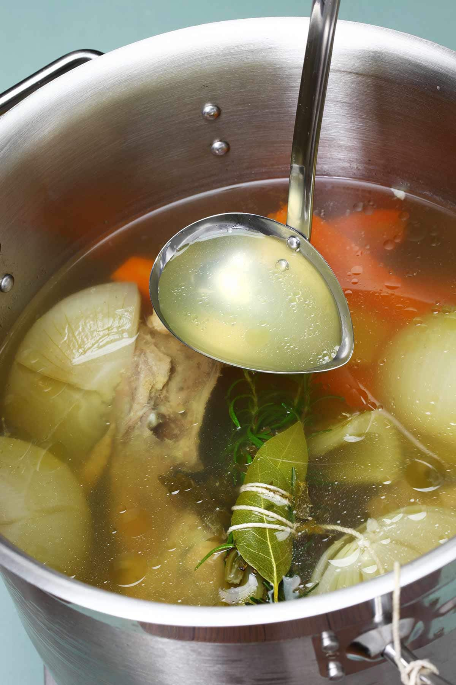

Roasted Chicken Stock

Description
This chicken stock recipe is a great way to use the leftover meat and bones from Roast Chicken with Potatoes.
The onion, carrots, and ginger help give the broth depth of flavor
Ingredients
- 1 Roast Chicken Carass
- 1 Onion
- 1 Carrot
- 1 Thumb-sized piece of Ginger
- 1 Bay Leaf
Steps
- Peel and chop the carrot. Dice the oninon
Add all ingredients to large stock pot with 4 quarts of water. Bring to a boil.
- Simmer for 2 hours. Strain the liquid and drink immediately or place in fridge when cool.